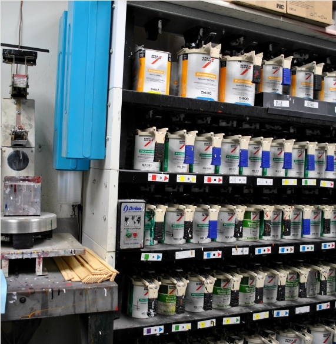

Если Вы не безразличны к результатам своего труда, то выбираете для этого лучшие средства и возможности,
а для ведения успешного бизнеса важен фактор экономии финансов и времени. Всё это позволяет совместить система подбора автоэмалей BRULEX.
Эта система даёт возможность вернуть автомобилю первозданный внешний вид при минимальных затратах.
Материалы BRULEX производятся на современных заводах западной Европы, что гарантирует соответствие требованием мировых стандартов.
Не смотря на это, их стоимость относительна не велика. Выбирая BRULEX из материалов представленных на рынке – вы получаете немецкое качество по лучшей цене в своём классе.
Система подбора BRULEX позволяет создавать любые цвета для всех марок автомобилей, благодаря полному спектру необходимых компонентов (солиды, металлики, перламутры, ксираллики,).
Так же предлагаем решения для ремонта коммерческого транспорта и металлоконструкций, а именно полиуретановые эмали "Транслак" (Германия), по кодам и каталогам производителей.
